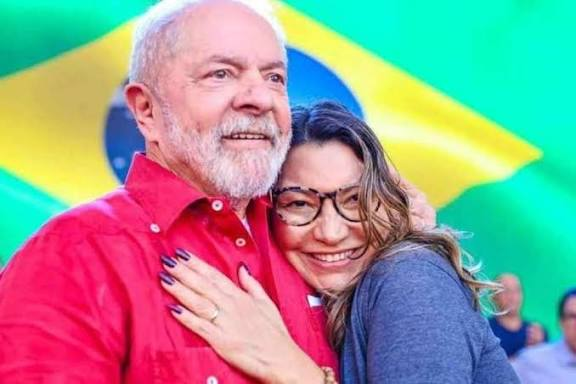
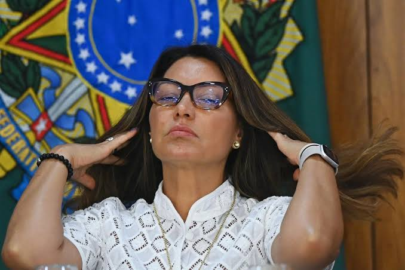
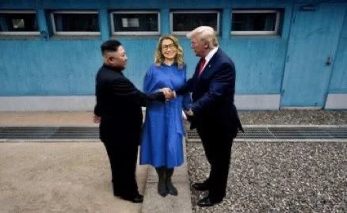
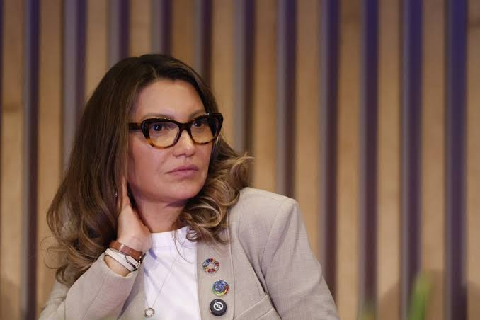

Indicada e condecorada como Campeã da Boa Vontade pela FAO (Organização das Nações Unidas para a Alimentação e a Agricultura) por sua dedicação em erradicar a fome.

Participação em atos de proteção feminina, como o lançamento de teleatendimento psicológico no SUS para mulheres vítimas de violência, além de atuar no enfrentamento ao feminicídio.

Nomeada enviada especial da COP30 para mulheres e condecorada com a Grã-Cruz da Ordem do Mérito Cultural em reconhecimento ao apoio à cultura. Ela também idealizou o festival cultural associado ao G20 (conhecido como "Janjapalooza").

Coordenação de grandes eventos públicos, como a festa de posse presidencial de 2023, e forte engajamento em estratégias de comunicação e aproximação com eleitores nas redes sociais.